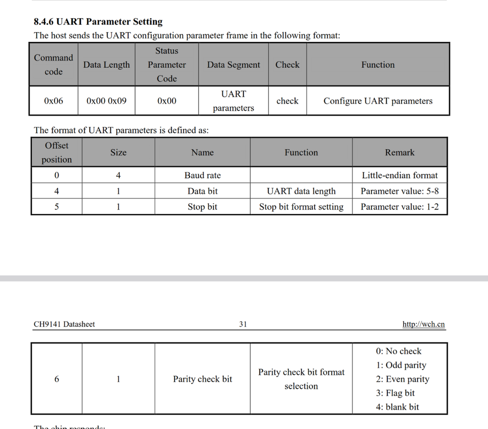
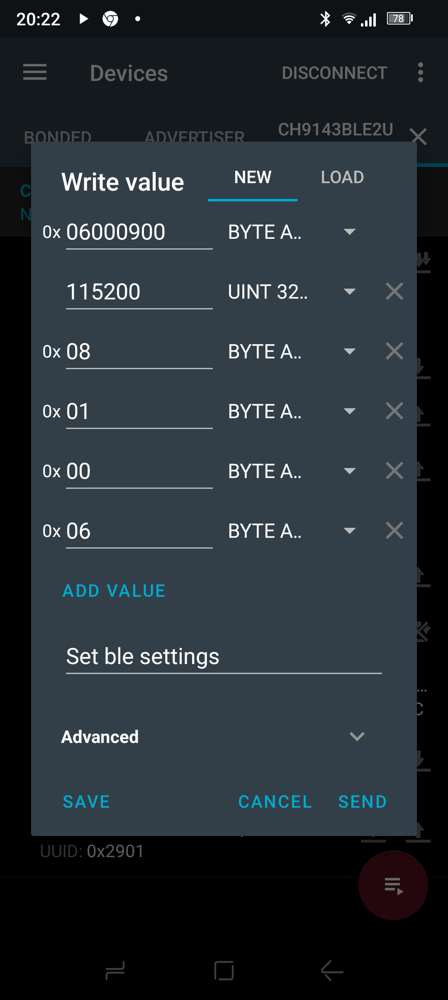

This is a little documented fact, but it is possible to use WCH Link devices as regular JTAG adapters:
The link device must be set to ARM mode (the mode we are using is referenced as ARM-JTAG WinUSB in the manual)
And the type of device the link will be emulating is 'cmsis-dap'.
CH9143 Datasheet
CH9141 Datasheet
CH9140 Datasheet
Hidden in the CH9141 Datasheet, is a critical set of information about the BLE interface:
0xFFF0 is the BLE UART service, it functions similarly to NRF BLE UART.
0xFFF1 Property is RX
0xFFF2 Property is TX
0xFFF3 Property is Configuration, of which the format is described only in this datasheet:
Sending 0600090000C2010008010006 sets the UART up for micropython settings.

